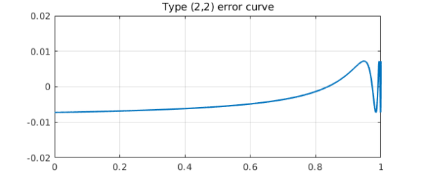
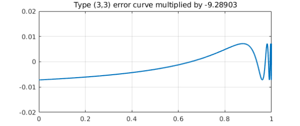

Here is the error curve for type (2,2) best rational approximation of $x^{200}$ on $[0,1]$:
x = chebfun('x',[0 1]);
f = x^200;
[p2,q2,r2,err2] = minimax(f,2,2);
plot(f-p2./q2), grid on, ylim([-.02 .02])
title('Type (2,2) error curve')

And here is the same figure for type (3,3), except multiplied by $-9.28903$:
[p3,q3,r3,err3] = minimax(f,3,3);
plot(-9.28903*(f-p3./q3)), grid on, ylim([-.02 .02])
title('Type (3,3) error curve multiplied by -9.28903')

The curves have just about the same height! In fact, the ratio of these particular approximation errors is about 9.36:
format short err2 err3 ratio = err2/err3
err2 =
0.0072
err3 =
7.7243e-04
ratio =
9.3628
In rational approximation theory, the number $9.28903\dots$ is famous as the asymptotic rate at which rational approximations to $e^x$ on $(-\infty,0]$ improve each time you increase the degree by 1. It it known as (the reciprocal of) Halphen's constant, which has a Wikipedia entry. Here, we don't have $e^x$ on $(-\infty,0]$ but $x^n$ on $[0,1]$, where $n$ is a large number. It turns out that in a certain precise sense, this problem has the same asymptotic behavior. We proved this in a short paper that appeared last year [1].
The exponent $200$ above was of course not special. Look how little the numbers change if we increase it to $1000$:
f = x^1000; [p2,q2,r2,err2] = minimax(f,2,2); [p3,q3,r3,err3] = minimax(f,3,3); err2 err3 ratio = err2/err3
err2 =
0.0073
err3 =
7.9394e-04
ratio =
9.2366
Let's also crank up $k$ from $2$ and $3$ to $3$ and $4$. The approximation to $9.28903$ becomes closer:
[p4,q4,r4,err4] = minimax(f,4,4); ratio = err3/err4
ratio =
9.2805
[1] Y. Nakatsukasa and L. N. Trefethen, Rational approximation of $x^n$, Proc. AMS 146 (2018), 5219--5224.